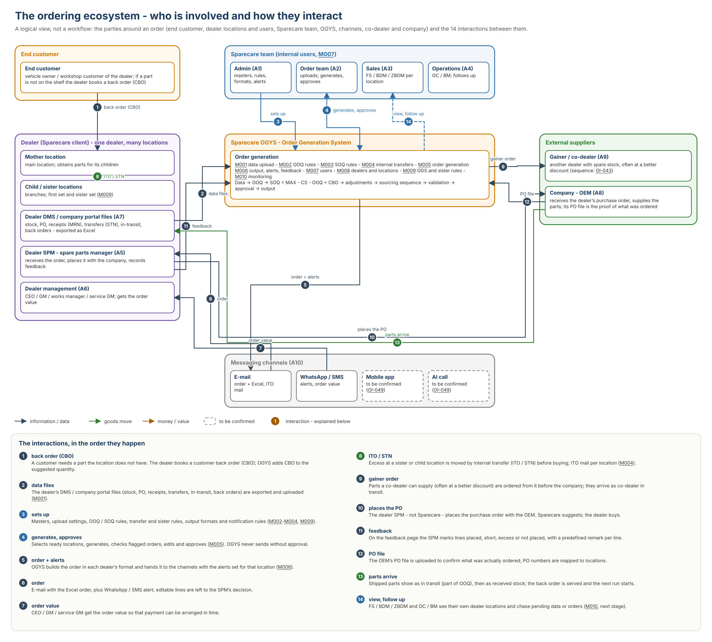
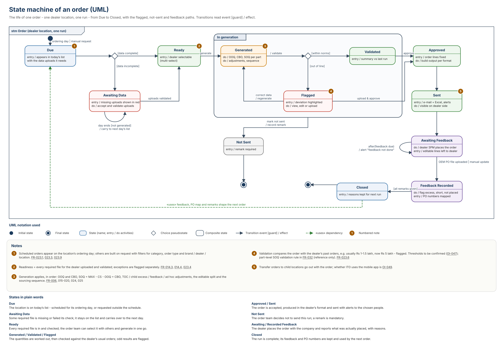
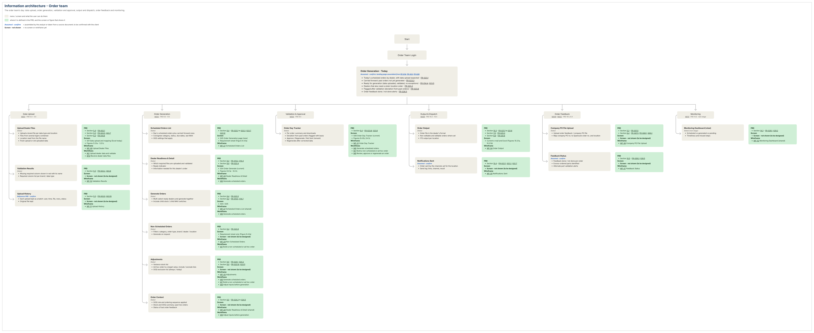
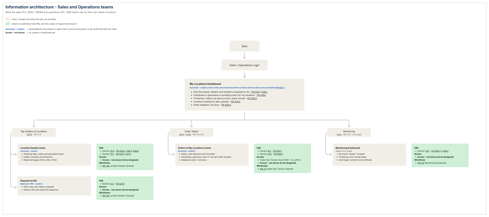
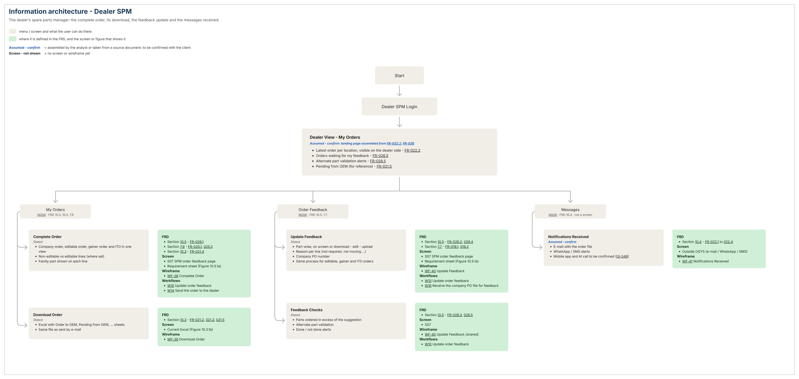

Sparecare - Sparecare OGYS
Functional Requirements Document v1.0 (Final) and its companion pages. Choose an item in the menu on the left; every page is generated from the same FRD master, so numbers and references match.
The FRD
Sparecare_OGYS_FRD-v1.0.htmlThe modules, their requirements, layman descriptions, open issues and appendices.
System Overview
The whole picture before the detail.




Information Architecture
One diagram per role that signs in: menus, screens and the FRD section behind each.



Workflows
Swimlanes for every workflow; each human step names its screen.
- Business workflows
- M001 Data Upload and Mapping
- M002 OOQ Rules
- M003 SOQ Rules
- M004 Internal Transfers (Auto Approval)
- M005 Order Generation
- M006 Order Output, Notifications and Feedback
- M007 User and Access Management
- M008 Dealer and Location Management
Wireframes
Every screen, role by role in menu order, drawn to the client's design system - responsive (desktop, tablet, phone), each with a clean and an annotated view linked to features and workflows.
- Role × screen matrix 52 screens · gaps
- Style guide SpareCare-Design-System-Guide.pdf
- Review comments all screens · open, incorporated, done
- Sparecare Admin 33 screens · 33 drawn
- Order team 15 screens · 15 drawn
- Sales and Operations teams 5 screens · 5 drawn
- Dealer SPM 6 screens · 5 drawn
The wireframes are drawn to the client's style guide: open the style guide.
Inputs needed from the customer
54 questions · 54 open - the screens are drawn on stated assumptions; open the register.